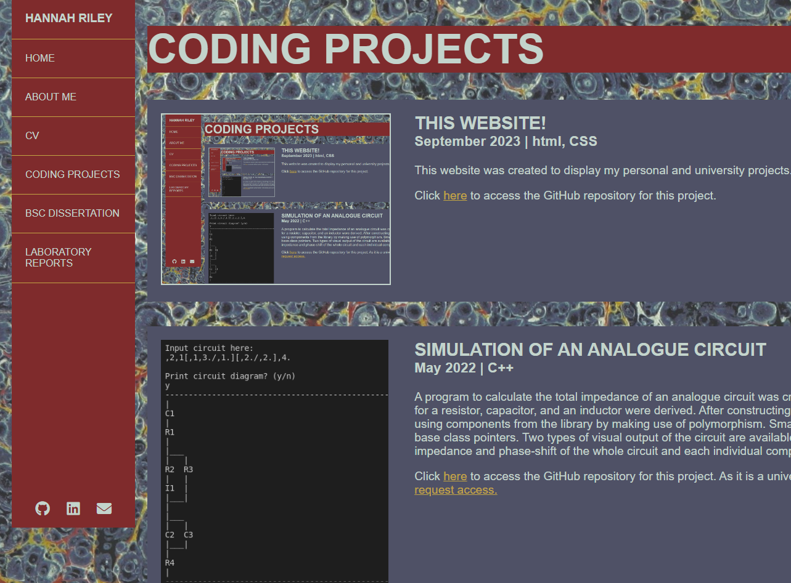
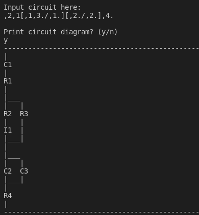
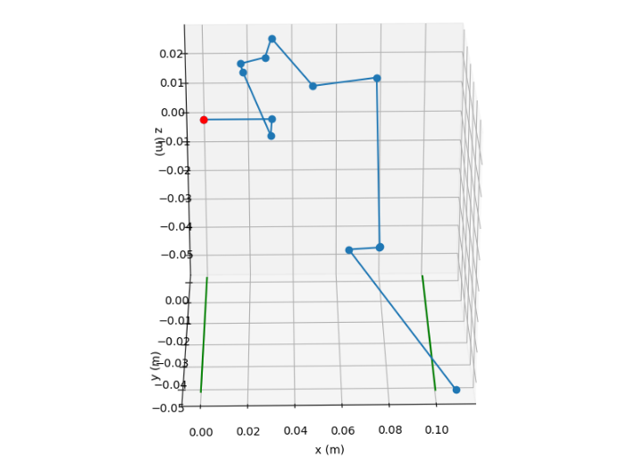
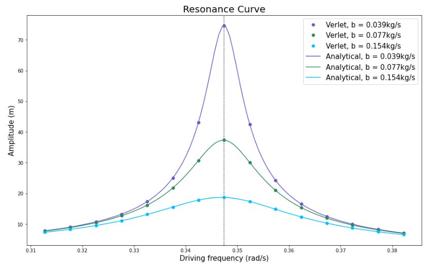
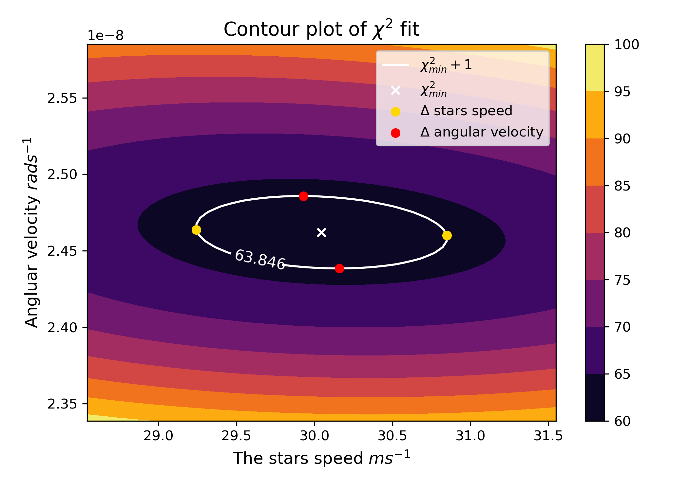

Coding Projects
|  | This website!September 2023 | html, CSSThis website was created to display my personal and university projects. Click here to access the GitHub repository for this project. |
|  | Simulation of an Analogue CircuitMay 2022 | C++A program to calculate the total impedance of an analogue circuit was created. From an abstract base class for circuit components, classes for a resistor, capacitor, and an inductor were derived. After constructing a library of components, the user is then able to build a circuit using components from the library by making use of polymorphism. Smart pointers are utilised throughout the code to create vectors of base class pointers. Two types of visual output of the circuit are available to the user. Once the frequency of the circuit is set by the user, the impedance and phase-shift of the whole circuit and each individual component is returned. Click here to access the GitHub repository for this project. As it is a university project, the repository is private so you will first need to first request access. |
|  | Penetration of Neutrons Through ShieldingMarch 2021 | PythonIn this project Monte Carlo simulations were used to model the behaviour of thermal neutrons as they penetrate various shielding materials. Considering the only interactions of the neutrons with the shielding material atoms to be either absorption or scattering, the fraction of neutrons absorbed, reflected, or transmitted through varying thicknesses of water, lead, or graphite was calculated, along with the corresponding characteristic attenuation lengths. The effect of multiple slabs of different materials on the transmission of the neutrons was also investigated using the woodcock method. Click here to access the GitHub repository for this project. As it is a university project, the repository is private so you will first need to first request access. |
|  | The Damped Harmonic OscillatorMarch 2021 | PythonThe equation that describes the motion of a spring-mass system under an applied external force has no accessible analytical solution. This aim of this code is to produce an accurate model of the spring-mass system. First, various numerical methods were investigated and compared to the analytical solution of the system where there is no external force. Once the best method was determined, it was used to model the behaviour of the oscillator under a non-zero external force. Then by weighing accuracy against efficicency, the timestep for the numerical method was selected. Verlet's method with the timestep ℎ=0.1𝑠 approximated the analytical solution very well in all of the cases. This chosen numerical method was used to investigate the effect of damping, sudden forces, and sinusoidal forces on the system. Verlet's method also approximated the resonance and phase difference curves of the system well. Click here to access the GitHub repository for this project. As it is a university project, the repository is private so you will first need to first request access. |
|  | Doppler SpectroscopyDecember 2020 | PythonThis data analysis code is used to analyse a system of a single planet orbiting a star using doppler spectroscopy. The code took in data on the wavelengths of light observed from the star at different times. Once the data was validated, a minimised chi squared fit for two parameters (star speed and angular velocity) was then performed. Anomalous data points are then removed and the fit is then repeated until no anomalous data points remain. A contour plot was used to extract the errors on the fit parameters (pictured left). The additional quantities were then caculated: the distance between the star and the planet, mass of the planet, the speed of the planet, and the period of the systems motion. Click here to access the GitHub repository for this project. As it is a university project, the repository is private so you will first need to first request access. |